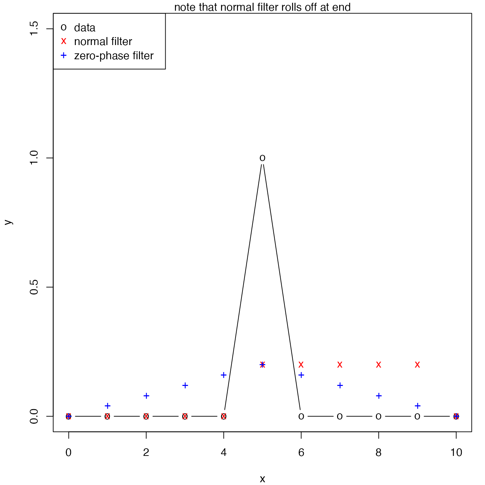

Filter a time-series, possibly recursively
oceFilter(x, a = 1, b, zero.phase = FALSE)
| x | a vector of numeric values, to be filtered as a time series. |
|---|---|
| a | a vector of numeric values, giving the \(a\) coefficients (see “Details”). |
| b | a vector of numeric values, giving the \(b\) coefficients (see “Details”). |
| zero.phase | boolean, set to |
A numeric vector of the filtered results, \(y\), as denoted in “Details”.
The filter is defined as e.g. \(y[i]=b[1]*x[i] + \)\( b[2]*x[i-1] + b[3]*x[i-2] + ... - a[2]*y[i-1] - a[3]*y[i-2] -
\)\( a[4]*y[i-3] - ...\), where some of the illustrated terms will be omitted if the lengths of
a and b are too small, and terms are dropped at the start of
the time series where the index on x would be less than 1.
By contrast with the filter() function of R, oce.filter
lacks the option to do a circular filter. As a consequence,
oceFilter introduces a phase lag. One way to remove this lag is to
run the filter forwards and then backwards, as in the “Examples”.
However, the result is still problematic, in the sense that applying it in
the reverse order would yield a different result. (Matlab's filtfilt
shares this problem.)
The first value in the a vector is ignored, and if
length(a) equals 1, a non-recursive filter results.
library(oce) par(mar=c(4, 4, 1, 1)) b <- rep(1, 5)/5 a <- 1 x <- seq(0, 10) y <- ifelse(x == 5, 1, 0) f1 <- oceFilter(y, a, b) plot(x, y, ylim=c(-0, 1.5), pch="o", type='b')legend("topleft", col=c("black","red","blue"), pch=c("o","x","+"), legend=c("data","normal filter", "zero-phase filter"))mtext("note that normal filter rolls off at end")